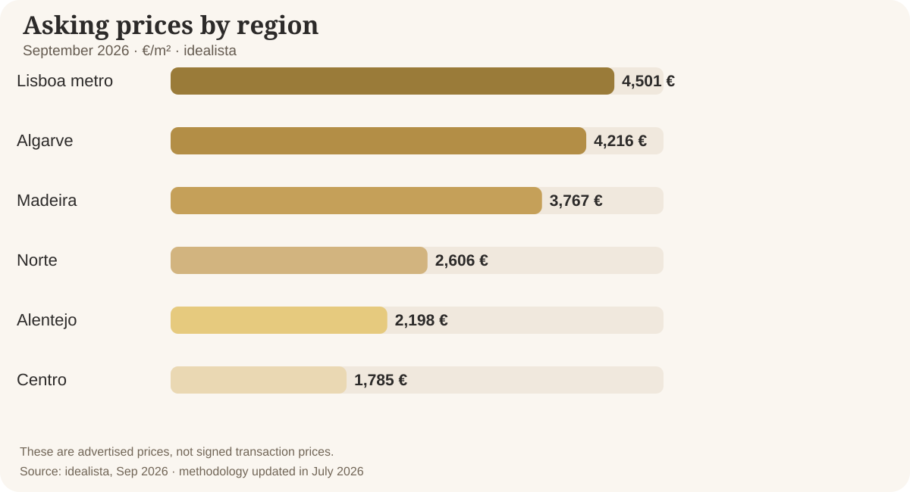

Недвижимость Португалии в 2027 году: покупать сейчас или ждать?
В 2027 году рынок недвижимости Португалии, вероятнее всего, останется дорогим, но темпы роста могут стать спокойнее. Снижение цен по всей стране не выглядит главным сценарием — зато отдельные переоценённые объекты могут продаваться с дисконтом. Разберёмся, что известно уже сегодня и какие события способны изменить прогноз.
Что происходит сейчас: три важных факта
- +16,5% за год. По данным INE, во II квартале 2026 года индекс цен фактически проданного жилья вырос на 16,5% по сравнению с тем же кварталом 2025 года.
- −6,4% сделок. За тот же период число сделок сократилось на 6,4%. Это не падение цен: рынок может дорожать, даже когда покупают меньше.
- 3 228 €/м². Такова медианная цена объявлений о продаже по Португалии в сентябре 2026 года по Idealista (+7,9% за год). Цены в объявлениях и суммы реальных сделок — разные показатели.
Почему цены не обязаны упасть
В востребованных местах жилья по-прежнему меньше, чем хотели бы купить или арендовать люди. Международный валютный фонд и ОЭСР отмечают структурные препятствия: долгое согласование строительства, нехватку работников и медленное пополнение жилого фонда. Поэтому даже ослабление спроса не означает автоматического обвала цен. Но это не относится одинаково ко всем городам и районам.
Одна Португалия — разные рынки
На графике — цены предложения на сентябрь 2026 года. Разница между Лиссабонской агломерацией, Алгарве и внутренними регионами огромна. Даже внутри одного города можно встретить квартиры с очень разными перспективами: всё решают район, документы, состояние, энергоэффективность, транспорт и адекватность цены.

Три сценария на 2027 год
Умеренный рост цен на уровне страны. Дефицит жилья поддерживает стоимость, но покупатели осторожнее оценивают бюджеты и качество объектов.
Стагнация или локальная коррекция, если финансирование подорожает, доходы окажутся под давлением или спрос заметно ослабнет.
Ускорение роста при более доступной ипотеке и устойчивом спросе на фоне ограниченного предложения.
Эти диапазоны — мой аналитический ориентир, а не официальный прогноз INE, банка или гарантия результата. Это возможные изменения средних цен в течение 2027 года; конкретный объект может вести себя иначе.
Что можно ожидать с большей уверенностью
- Дефицит качественного жилья в востребованных местах не исчезнет за один год.
- Разрыв между районами и объектами останется значительным.
- Цена, состояние квартиры и готовность документов будут сильнее влиять на скорость продажи.
Что пока под вопросом
- Процентные ставки и условия ипотечного кредитования в течение 2027 года.
- Темпы экономического роста, покупательная способность и внешние риски.
- Новые правила и сроки их практического действия — любые изменения важно проверять на дату сделки.
Покупать в 2027-м или подождать?
Если вы ищете жильё для себя на много лет, главный вопрос — не «угадать месяц с самой низкой ценой», а найти подходящий объект по разумной цене и с комфортным платежом. Сравните несколько вариантов, заложите расходы на покупку и ремонт, проверьте документы с юристом и заранее оцените финансирование. Если бюджет на пределе, лучше не спешить.
А если вы продаёте?
Рынок не прощает завышенную стартовую цену так легко, как в периоды ажиотажа. Перед размещением стоит изучить конкурентов, проверить документы и подготовить объект к показам. Хорошая подготовка часто помогает продать быстрее, чем дорогое объявление без стратегии.
Мой вывод
В 2027 году я скорее жду перехода от быстрого общего роста к более избирательному рынку. Хорошо расположенные и правильно оценённые объекты будут пользоваться спросом; завышенные цены и слабая подготовка увеличат срок продажи. Решение стоит принимать по конкретной недвижимости, а не по одному общенациональному проценту.
Источники и дата данных
- Portugal — INE, Q2 2026 (via Observador)
- idealista — Portugal, Sep 2026
- idealista — price report by region
- IMF — Portugal Article IV 2026
- OECD — Economic Survey Portugal 2026
- BPI — Residential real estate, Sep 2026
Материал подготовлен 8 октября 2026 года, носит информационный характер и не является финансовой рекомендацией.